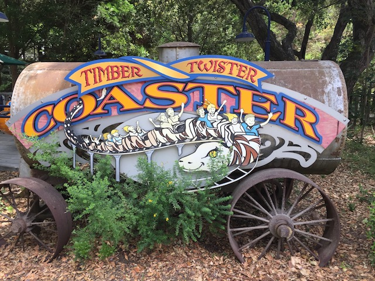

| |
Gilroy Gardens Review

Gilroy Gardens is a fun little small park right in the heart of Gilroy. And...man. This has to be one of the more interesting parks out there. I mean...this park doesn't exactly mean much to coaster enthusiasts, or even thrill seekers. As...yeah. The rides here aren't very thrilling. The rides are mainly family rides, and Gilroy Gardens is mainly a family park. OK. So this is essentially a credit whoring park. The only reason to come to this park is to snag the credits and then get the hell out of there. Right? Actually, no. Yes. Some enthusiasts do come here just for the credits and then get the hell out of there. It's actually incredibly easy as Gilroy Gardens is a Cedar Fair park. So if you have a platinum pass (and a lot of enthusiasts do), you can go in, get the credits, leave, and it'll cost you nothing. However, what some people enjoy about the park, myself included, is just the theming. You see, Gilroy Gardens is essentially just a small little theme park dropped right smack dab in the middle of a farmers market. So all the rides are surrounded by gardens, pretty landscaping, and nearly all of the rides are themed to food. Whether it be a garlic twirl, a banana boat, a mushroom swing, or the cake ride, it's all themed to stuff you'd find in the gardens market, and it's so quirky, that it's fun to check out, and see all that they have in this review of the park.
Rollercoasters
There is a link to a review of all the Rollercoasters at Gilroy Gardens.
Top Coasters
Quicksilver Express Review

Kiddy Coasters
Timber Twister Review

Flat Rides
Here are the reviews of all the Flat Rides at Gilroy Gardens. Now of course, there aren't a ton of flat rides here, as this is a small park. Yes. There are small parks with really good flat rides. But it's also a family park. So that rules out any wild or crazy flat rides at the park. I mean, the best flat ride in the park is Garlic Twirl. That's the teacups. That's the best flat ride here. Or hey. You could argue that the Banana Split is the best flat ride here. That's the pirate ship. The battle for best flat ride at Gilroy Gardens is between Garlic themed tea cups and a Banana themed pirate ship. I mean, both are fun. But as far as flat rides are concerned, that's very mild. There are also the Mushroom Chairswings, as well as a carousel, and a ferris wheel. Yeah. It's small. But hey. It's a small family park.
The smell of garlic is making me dizzy. Oh wait. That's just the ride. ;)
Dark Rides
Now Gilroy Gardens technically doesn't have a dark ride. Most people wouldn't really call this a dark ride. However, I have counted similar rides to this at WAY better parks, and it pretty much rides like a dark ride. Yep. It's one of those stupid boat rides. I know many people would count them as water rides, but they don't get you wet. It's pretty much like a dark ride, only on the water. Hell, I didn't even ride this particular stupid boat ride. I know it goes around gardens. And I enjoyed the ones I did at Europa Park. So hey. This might be worth checking out if you're here.
 Yet another stupid boat ride.
Yet another stupid boat ride.
Water Rides
The only possible water ride Gilroy Gardens could have is Rainbow Gardens. However, we're classifying that as a dark ride rather than a water ride. I guess you could argue that paddle boats is a water ride. That, and there is one thing to talk about. They have a water playground here. Sort of like a tiny little water park for really little kids. Our local swimming pool has one. You're too big for it if you're reading it, but it exists if you're visiting with small kids.
Dining
I did not eat at Gilroy Gardens. But I did hear that they have incredibly good Garlic fries worth checking out.
Theming and Other Attractions
Here are the reviews of all the other stuff at Gilroy Gardens. OK. Let's talk about theming. And while this is just a small little park, theming is VERY important here. Because as you know, this is Gilroy Gardens. And it's a garden first, and a theme park second. In fact, the entire park got started as a tree haven so that the Bonfate family (This used to be Bonfate Gardens) could have a place for their Circus Trees. And yeah. This place is full of circus trees. The other stuff to do is mainly, the gardens. Because this place is really all about the gardens. They come for the trees. If you google tree shaping, the vast majority of all those trees you see, they're at Gilroy Gardens. It's actually really cool. Plus, then you get to see some other cool stuff, they have other cool gardens, butterfly exhibits, really cool gardens, with pretty rock formations, and even some fun rides where everything is themed to food!
In Conclusion
Gilroy Gardens is a small little park that is nothing that's going to wow thrillseekers or coaster enthusiasts. There pretty much are no thrills here. So if you're a die-hard coaster enthusiast, you're probably not going to like this park. If you're just a credit whore, then you'll probably go in, get the credits, and then leave. However, the park itself is actually pretty cool. It doesn't even really feel like a theme park. What this place really feels like, is a botanic gardens. That, and a farmeres market. It's like a small little place where you go to look at the flowers, and the trees, and all the nature. And while you're here, here are a few rides embedded into the park. I mean, you have the farmers market where you can buy the food. Here, you don't just buy the food. You ride it. It's honestly one of the quirkiest parks out there. This isn't a place to go to for thrills. That should be obvious. But if you enjoy the gardens, you enjoy fresh food, trees, and want to have fun on a couple cute rides with some cool theming, then Gilroy Gardens is a fun little park for you.
Enthusiast FAQs.
*Are there kiddy coaster restrictions? - Nope. You can ride the kiddy coaster here.

Tips
*Don't treat Gilroy Gardens as a credit whoring stop.
*Be sure to check out all the cool circus trees.
*Have Fun!!!!
Theme Park Category:
Small Park
Location
Gilroy, California, U.S.A
Last Day Visited
June 24, 2017
Video
I do not have enough footage for a Gilroy Gardens video. There's really no need for a video of a park this small, but it's not impossible to say that this park will ever get a video of its own.
Complete Update List
2017
NorCal 2017
Here's a link to the parks website.
Home
|